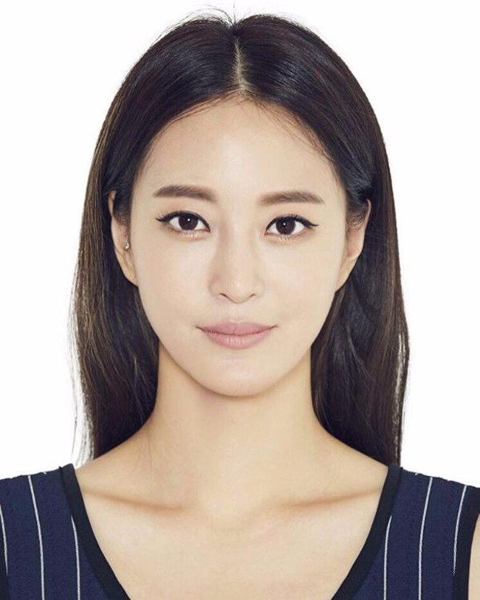
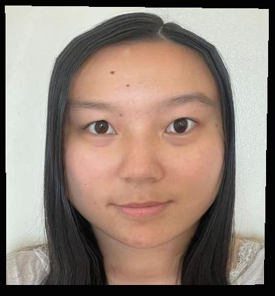

CS194-26: Intro to Computer Vision and Computational Photography, Fall 2021
Project 3: Face Morphing
Angela Chen
Defining Correspondences
Image of me.

Image of Korean actress, Han Ye-seul.
Keypoints of my face.
Keypoints of Han Ye-seul's face.
Triangulation of the average of the points of my face and the points of Han Ye-seul's face.
Computing the "Mid-way Face"
Original image of me.
Original image of Han Ye-seul.
Midway face of me and Han Ye-seul.
The Morph Sequence
A 45 frame morph sequence from my face to Han Ye-seul's face.
The "Mean Face" of a Population
I used a set of 37 Danish faces for my population.
Some of the Danes morphed into the average Danish face shape of this set.
The average Danish face of this population.
My face warped into the average Danish face geometry.
The average Danish face warped into my face geometry.
Caricatures: Extrapolating from the Mean
To extrapolate my face from the average Danish face, I computed the target face shape as
target_face_shape = (1 - alpha) * my_face_shape + alpha * avg_dane_face_shape.
I then warped my_face_shape into the target_face_shape.
Here are the results with varying values of alpha:
alpha = -0.5.
alpha = 0 (just my face shape, no Dane).
alpha = 1 (my face shape warped to average Danish face shape).
alpha = 1.5.
alpha = 2.
Bells and Whistles
I attempted to make myself look more masculine.
My face.
Average Chinese male face.
My face shape warped to the average face shape between my face and the average Chinese male face.
Appearance morph between my face and the average Chinese male face.
More masculine Angela. Shape and appearance morph.
Then I attempted to make myself look more white.
My face.
Average white American female face.
My face shape warped to the average face shape between my face and the average white American female face.
Appearance morph between my face and the average white American female face.
More white Angela. Shape and appearance morph.
And then, I attempted to make myself look more baby-like.
My face.
A face of an Asian female baby.

My face shape warped to the average face shape between my face and the face of the Asian female baby.
Appearance morph between my face and the face of the Asian female baby.
More baby-like Angela. Shape and appearance morph.
I made a morphing video using photos of myself from age 10 to age 21, my current age as of writing this webpage.
I morphed 16 photos of myself from age 10 to age 21.
I used 45 frames to morph from one photo to the next photo.
All images besides my face were found on the Internet.